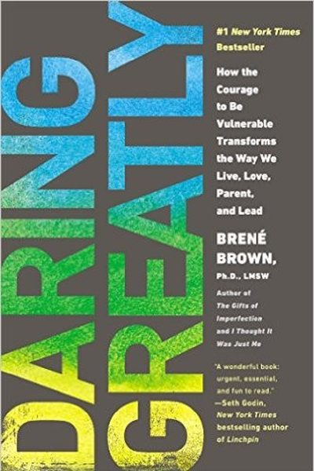

Library › Self-Improvement
Daring Greatly — Summary & Key Lessons

How the courage to be vulnerable transforms the way we live, love, parent and lead — the book that changed millions of lives.
📖 OPEN THE FULL INTERACTIVE BREAKDOWN →🌐 Read it in Hindi, Hinglish, Gujarati, Tamil & 22 more languages — free, with audio.
💡 The Big Idea
Brené Brown spent 12 years and thousands of interviews studying shame, vulnerability and worthiness — and her TED talk became one of the most-watched of all time. Her finding: we are hardwired for connection, but we armor ourselves with perfectionism, numbing and 'never good enough' — and the armor is what breaks us. The answer is daring greatly: showing up, being seen, and risking vulnerability, because 'vulnerability is not winning or losing; it's having the courage to show up when you can't control the outcome.' The arena quote — from Theodore Roosevelt — is the book's spine.
🧠 The 6 Key Lessons
Lesson 1: Vulnerability Is Not Weakness
What It Means to Dare Greatly
Brown's most fought-against finding: vulnerability — uncertainty, risk and emotional exposure — is not weakness; it is the most accurate measure of courage. The people she calls 'wholehearted' — the ones living fully — share one trait: they allow themselves to be seen, flawed and uncertain. We armoring ourselves against vulnerability also armor ourselves against love, creativity and joy, which all require it.
📖 Example: Brown's research: when she asked leaders 'what does vulnerability mean to you?', they said weakness — 'I don't do vulnerability.' Yet when she asked what makes a leader brave and trustworthy, they described vulnerability: admitting mistakes, asking for help.… Read the full example →
⚡ Do this: This week, do ONE vulnerable thing on purpose: admit a mistake to someone, ask for help, or share an unfinished idea. Notice what happens to the connection.
Lesson 2: Shame: The Fear of Disconnection
The Shame Shield
Shame is the intensely painful feeling that 'I am bad' (as opposed to guilt: 'I did something bad'). Shame thrives on secrecy, silence and judgment — and it's universal: everyone has it. Brown's research shows shame corrodes the very connection we need, driving us to hide, numb and perform. The antidote: empathy — sharing your story with someone who responds with compassion, not judgment.
📖 Example: Brown's famous line: 'If you put shame in a petri dish and cover it with empathy, it dies.' Her interviews show that people who survive shame's worst moments are the ones who spoke it aloud to someone safe — the secrecy was the poison, not the shame itself. Read the full example →
⚡ Do this: Name a shame you carry (in writing): 'I feel shame about ___.' Then tell it to ONE safe person this week — empathy is the only known cure.
Lesson 3: The Armor: Perfectionism, Numbing, and the Gremlin
The Armor
Brown dissects the armor we wear: perfectionism (a shield against judgment — 'if I'm perfect, no one can hurt me'), numbing (food, screens, alcohol, overwork — deadening feeling, which deadens joy too), and the 'gremlin' (the inner critic that rehearses failure). The armor feels protective but suffocates: perfectionism is not the path to excellence, it's the path to paralysis and disconnection.
📖 Example: Brown's data on perfectionism: it's correlated with depression, anxiety and addiction — and notably, parents' perfectionism predicts children's shame-proneness. The 'perfect' image we project is the loneliest place to live. Read the full example →
⚡ Do this: Identify your primary armor (perfectionism, numbing, people-pleasing). Catch it once this week — and do the imperfect thing anyway, on purpose.
Lesson 4: Wholehearted Living: The Ten Guideposts
Cultivating Wholeheartedness
From her interviews with 'wholehearted' people, Brown distilled ten guideposts: cultivate authenticity, self-compassion, a resilient spirit, gratitude and joy, intuition, creativity, play and rest, calm and stillness, meaningful work, and laughter. The pattern underneath: worthiness — believing 'I am enough' — which is built by practice, not by achievement.
📖 Example: Brown's guideposts are evidence-based: wholehearted people practice gratitude daily, play without guilt, rest without shame, and do work that matters to them — not work that merely looks impressive. Each guidepost is a daily practice, not a personality trait. Read the full example →
⚡ Do this: Pick ONE guidepost to practice this week (start with gratitude or play). Schedule it like a meeting — and do it even if it feels silly.
Lesson 5: Daring Leadership: The Arena
Daring Leadership
Brown's leadership chapter: the 'armored leadership' of certainty, power-over and 'never let them see you sweat' creates disengaged teams — while 'daring leadership' (courage, vulnerability, trust) creates the psychological safety where people do their best work. Her toolkit: rumble with hard conversations, take responsibility without shame-blame, and be the first to show up imperfectly.
📖 Example: Brown's research shows teams with psychological safety outperform — and her rule for leaders: 'You can't give people what you don't have' — leaders who can't be vulnerable can't build trust, and without trust, no feedback, innovation or loyalty survives. Read the full example →
⚡ Do this: In your next team or family moment, go first: acknowledge your part of the problem out loud. Watch how it frees others to be honest.
Lesson 6: Vulnerability Is Not Weakness — It's the Measure of Courage
What Keeps Us from Daring Greatly
Brown's research: the people who live most fully are those willing to be seen — to risk failure, rejection and judgment in the pursuit of connection and meaningful work. Vulnerability is not oversharing or weakness; it is the courage to show up without guarantees. Every act of real courage begins with the willingness to be imperfect in public.
📖 Example: Brown cites the 'man in the arena' — the one who actually attempts, fails and tries again — as the true example of daring. The leader who admits 'I don't know' to her team builds more trust than the one who fakes certainty. Read the full example →
⚡ Do this: Do one thing this week that risks being seen imperfectly — ask the question, share the draft, admit the gap.
✅ 5-Step Action Plan
- Do one vulnerable thing on purpose this week.
- Name a shame in writing and tell it to one safe person.
- Identify your armor — and do one imperfect thing anyway.
- Practice one guidepost daily (gratitude, play, or rest).
- Go first in one hard conversation: acknowledge your part.
⚠️ When This Doesn't Work
Brown's 'dare to be vulnerable' is beautiful advice — in a culture that rewards it. Boeing's engineers were told to be candid, to speak up, to raise concerns; the culture punished exactly that candor so brutally that the 737 MAX's design flaws were known, documented and ignored until two planes fell. Vulnerability without psychological safety is not courage, it's a career risk. The book underweights the precondition: before you dare greatly, audit whether your organisation actually pays for honesty — because daring greatly in the wrong room gets you managed out, not celebrated.
💀 The Graveyard Proves It
🛬 Boeing 737 MAX — When the Sales Pitch Overrode the Software. Burn: 346 lives; $20B+; a legacy of trust. Read the full case study →
💬 Best Quotes from Daring Greatly
- “Vulnerability is not winning or losing; it's having the courage to show up and be seen when we have no control over the outcome.”
- “Courage starts with showing up and letting ourselves be seen.”
- “What we know matters, but who we are matters more.”
Interactive version: mark lessons as read, listen in your language, share quote cards.